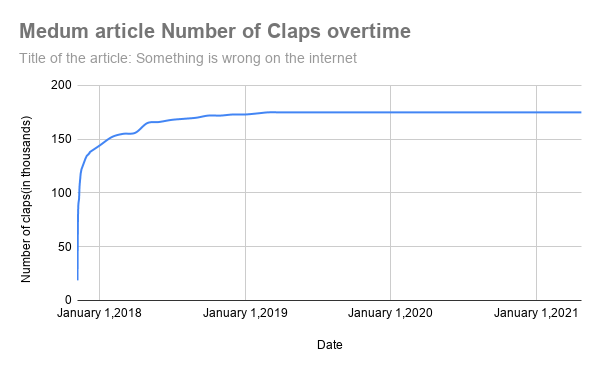
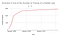
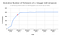
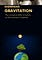

Medium article Claps overtime and Network effect

Because monitoring the network effect make sense for those who want to ship ideas, products, or services to others, I am studying this effect for years until now, and like how new york time articles helped Jonas Berger study this effect I thought that Medium article also can teach us how ideas spread.
Writing on Medium is probably not about getting more claps but every writer need exposure and the number of claps helps get more exposure because of the effect of Recommendation and the confirmatory bubble, these two other effects of the internet that I am also studying that participate a lot on spreading ideas faster and broader. The recommendation engine because it is obvious who know how recommendation works on the internet that the more an article gets claps the more the recommendation engines recommend it to other readers and the fact that this article is recommended to others provides it more and more claps and the recommendation engine keeps scoring the article higher and higher and recommend it to more and more people. This effect of recommendation engine like the effect of the filtering engines can bring some concerns like those highlighted in the book the Filter bubble by Eli Pariser, you can see his ted talk about this bubble effect here and my short article about it here.
In this example, the medium article in question is this article
https://medium.com/@jamesbridle/something-is-wrong-on-the-internet-c39c471271d2

You can see clearly that as successful in term of claps an article is, the success will fade and we can clearly state that unless that an interesting random effect that brings the topic of the article in the trend or some growth hack tricks from the writer or the SEO hustler is a bit crazy to believe getting more claps a year after the publication of an article because the article will be seen as outdated by the recommendation engine and will be deep into the dark internet. But like I am writing about this article which already in the dark, you can expect that the exposure of this article can bring it into the hit again.
It is interesting to see that the dynamical system similarity, mainly the first order dynamical system, applies also here in the case of the number of claps of a Medium article like I told it in one of my last article that I did not find in order to give you the link. But I could get some chart about this similarity in other topics like the number of friends evolution of a social media user mainly a book social media user, in this case, shelfari which has been acquired by Amazon.

And the number of followers of a financial analyst on SeekingAlpha a platform about stock and option investing.

You clearly see the same pattern on all of these charts what suggests that something systemic is happening in the background. It is this kind of systemic behavior that I learned monitoring and learning the network effect with tactics to optimize them. It took a lot of time and effort to collect data, analyze and learn from them and also reading and listening to many experts about this topic of network effect and virality but you are worth the effort.
PS: I applied all my effort and my skills in data science, Software engineering, and knowledge about the network effect to write Gamestop anatomy of a stock short bubble here
and also in the process of writing these other data-driven books for sake of knowledge sharing and contributing.
